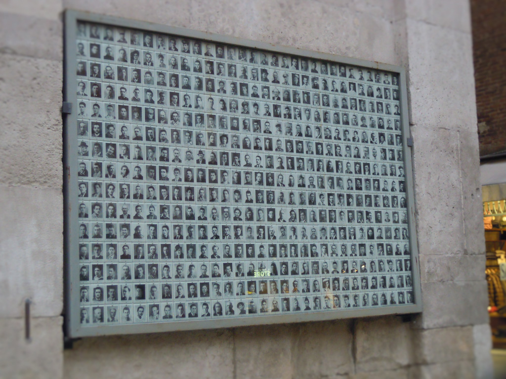

Sacrario partigiano della Ghirlandina
A Modena in piazza della Torre, sulla facciata settentrionale della torre campana della Ghirlandina, è presente un memoriale dedicato ai caduti della Resistenza italiana durante la seconda guerra mondiale. Le foto dei dispersi e caduti vennero appese spontaneamente dalle famiglie delle vittime dopo la liberazione di Modena, avvenuta il 22 aprile 1945; col passare del tempo sono state raccolte tutte le 1370 foto dei caduti partigiani modenesi.